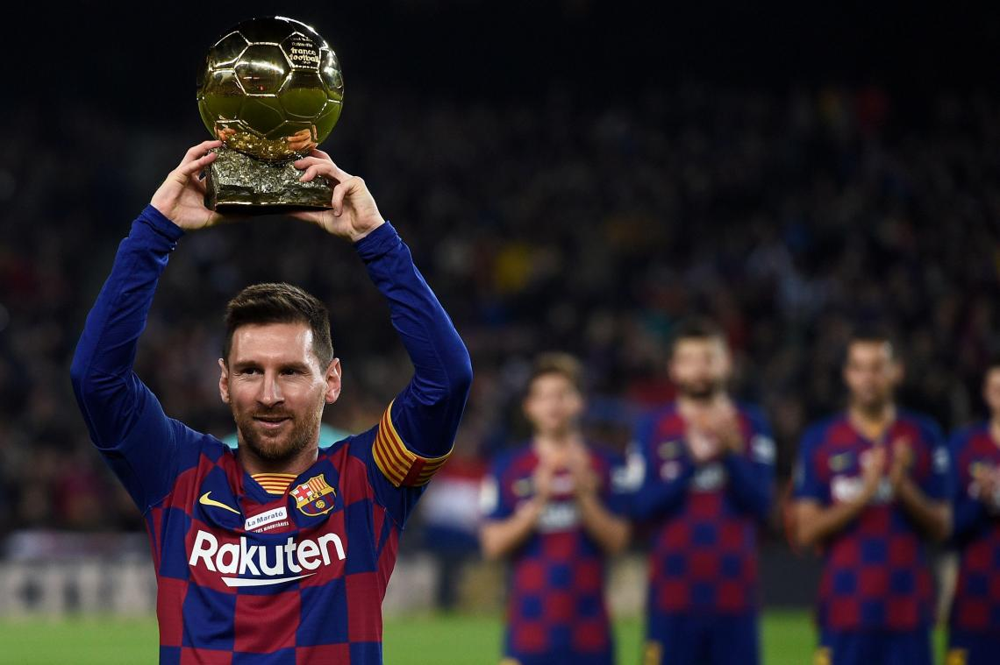

Chuyện trò với Leo Messi
Hai mươi tư năm là quãng thời gian rất ngắn. Quá khứ tựa như một cái chớp mắt, còn tương lai dường như còn rất xa vời. Còn sớm, quá sớm, để định hình mọi việc và thật khó đoán trước những gì sẽ diễn ra sau này. Nhưng điều bạn có thể làm mọi lúc, là cố gắng. Leo Messi đồng ý với điều này.
Yên vị bên bàn trong phòng tiếp khách sâu trong Nou Camp, trông anh như một cậu học trò chuẩn bị làm bài tập tại lớp. Một chiếc điện thoại đặt trên bàn là dụng cụ trợ giúp duy nhất của anh.
Cùng bắt đầu thôi.
Đâu là những thời khắc khó khăn nhất anh từng trải qua trong cuộc đời mình?
“Khi rời khỏi đất nước Argentina để tới Tây Ban Nha. Tôi phải rời xa quê hương, bạn bè, người thân. Một vài năm đầu tiên thật khó nhọc. Có những khi chỉ tôi và bố ở Barçalona còn mọi người khác trong gia đình ở lại Rosario. Chúng tôi đã phải chịu đựng cùng nhau. Tôi nhớ Mattías, Rodrigo, em gái út và mẹ tôi. Tôi từng khóc một mình ở nhà để bố tôi không nhìn thấy.”
Và khoảnh khắc hạnh phúc nhất?
“Khi giành được những danh hiệu cùng Barcelona và đội tuyển Argentina.”
Còn Quả bóng vàng thì sao?
“Những giải thưởng cá nhân mang lại niềm vui cho những người tôi yêu quí, chúng đền bù cho những hi sinh gia đình tôi đã phải bỏ ra. Nhưng những danh hiệu mang lại hạnh phúc cho cả thành phố hay cả một quốc gia còn quý giá hơn nhiều. Điều đó là siêu việt, không thể so sánh.”
Nhưng nay anh đã là vị vua của toàn thế giới.
“Tôi vẫn là tôi, và tôi may mắn được là một thành viên của một đội bóng vĩ đại.”
Liệu anh đã từng nghĩ xem vài năm thành công đến khó tin vừa qua đã mang lại cho anh những gì hay không?
“Tôi chưa bao giờ dự đoán được những điều này. Cả trong những giấc mơ điên rồ nhất tôi cũng chưa từng nghĩ tới mọi thứ sẽ tốt đẹp đến vậy.”
Hãy trở về quá khứ nào: kí ức đẹp đầu tiên về bóng đá của anh như thế nào?
“Ngay từ khi bắt đầu, tại Grandoli, chúng tôi chơi tại giải Afi đấu với Amanecer. Họ tự nói rằng mình là số một, là nhà vô địch. Cả gia đình tôi ngồi trên khán đài. Và tôi ghi bốn bàn, trong đó có một bàn rất tuyệt.”
Tại sao anh lại yêu bóng đá đến vậy?
“Tôi cũng không rõ nữa. Mới đầu tôi chỉ yêu thích nó như mọi đứa trẻ khác, và đến giờ tôi vẫn thích thú với nó vô cùng.”
Làm cách nào anh có tự tin đến vậy với trái bóng, anh đã học những mẹo anh biết từ đâu vậy?
“Bằng cách dành tất cả thời gian cho bóng đá. Khi còn bé tôi thường đứng một mình trong góc và đá quả bóng lăn quanh không ngừng. Nhưng tôi không học những bước cố định. Tôi cũng chẳng nghĩ ra những chiêu đánh lạc hướng hay những gì đại loại thế. Tôi chỉ chơi theo cách phải thế. Tôi không nghĩ gì nhiều.”
Ai là người đã đưa anh đến với tình yêu dành cho bóng đá?
“Bà tôi, Celia, đưa tôi tới sân bóng lần đầu tiên. Bà là người rất quan trọng, vô cùng đặc biệt với tất cả chúng tôi. Bà là một người tốt. Tôi nhớ, chủ nhật nào ở nhà bà cũng giống như mở tiệc vậy. Anh trai Rodrigo và anh họ tôi là những tấm gương cho tôi. Bố tôi cũng cổ vũ tôi hết mình.”
Để tới được vị trí ngày hôm nay liệu có khó khăn đối với anh?
“Đứa trẻ nào cũng muốn được trở thành cầu thủ bóng đá, nhưng để làm được điều đó bạn cần làm việc chăm chỉ và hi sinh rất nhiều. Bạn sẽ phải trải qua những thời điểm rất gian khổ, như khi tôi quyết định ở lại Barcelona… Đó là quyết định tôi đưa ra. Không ai ép buộc cả. Bố mẹ tôi từng nhiều lần hỏi rằng tôi muốn làm gì. Tôi muốn học tại lò đào tạo trẻ bởi tôi biết đó là cơ hội để trở thành cầu thủ. Từ khi còn trẻ tuổi, tôi đã rất biết chịu trách nhiệm về những gì mình làm.”
Chứng bệnh rối loạn tăng trưởng và chiều cao đã ảnh hưởng tới anh như thế nào?
“Tôi hãy còn là một cậu bé, tôi không hề biết chuyện gì đang xảy đến với mình, trừ những mũi tiêm vào chân hàng đêm. Nhưng, từ khi còn ít tuổi hơn thế, tôi đã biết khống chế bóng thật tốt trên sân, trở nên lẹ làng hơn, mau mắn hơn những cầu thủ to con để giữ được bóng.”
Trận đấu nào trong suốt sự nghiệp của anh mang lại những kí ức tuyệt vời nhất?
“Trận đấu trước Chealsea trong khuôn khổ Champions League, trận derby với Real Madrid mà tôi ghi được ba bàn, và, dĩ nhiên, chung kết World Cup U20 cùng bán kết với Brazil ở Bắc Kinh.”
Những bàn thắng đẹp nhất?
“Nếu phải lựa chọn lúc này, tôi sẽ chọn bàn thắng ở Rome và bàn thắng trước Estudiantes.”
Bàn thắng trong trận với Getafe thì sao?
“Đúng rồi, bàn đó cũng rất tuyệt.”
Bàn thắng vào lưới Getafe có phải bàn tuyệt nhất anh từng ghi trong đời?
“Có thể là vậy, nhưng cũng có một vài bàn khi tôi còn bé, mười hay mười một tuổi và chơi cho Newell’s, cũng từa tựa như thế. Nhà tôi vẫn giữ những cuộn băng ghi lại cảnh đó.”
Ở tuối đó, khi được hỏi ai là cầu thủ yêu thích của mình, anh đã trả lời: “Anh trai Rodrigo và anh họ Maxi của tôi.” Anh đã từng thần tượng cầu thủ nào hay chưa?”
“Không, tôi không hề có một cầu thủ yêu thích, hay một thần tượng nào cả. Khi lớn thêm một chút, tôi bắt đầu thích Aimar, tôi ngưỡng mộ lối chơi của anh. Lần đá với anh ở Valencia, cuối cùng tôi cũng hỏi xin được áo đấu của anh.”
Còn Maradona?
“Ông là cầu thủ vĩ đại nhất.”
Anh có xem ông chơi bóng cho Newell’s khi còn ở Rosario?
“Lúc ấy tôi vẫn rất nhỏ. Tôi mới sáu tuổi. Tôi đã tới trận đấu ra mắt của Maradona. Nhưng tôi chẳng nhớ nổi nữa.”
Có đúng bố anh đã mua tặng anh một cuốn băng ghi lại những khoảnh khắc đẹp nhất của Maradona không?
“Tôi xem đi xem lại những bàn thắng của Diego, nhưng lại không nhớ được ai đã tặng tôi cuốn băng đó.”
Anh nói gì khi mọi người đều so sánh anh với Maradona và cứ nghĩ anh là người kế thừa của ông ấy?
“Điều đó làm tôi rất vui mừng, bởi tôi chưa làm được gì nhiều, vẫn cần trưởng thành và học hỏi nhiều hơn nữa. Tôi gắng cải thiện mình từng ngày, để trở thành một cầu thủ giỏi hơn. Thêm nữa, Diego là độc nhất vô nhị, sẽ không có người thứ hai được như ông.”
Đó hẳn là câu trả lời hiển nhiên nhất. Hãy chuyển sang một chủ đề khác nào.
Maradona từng cho anh lời khuyên gì?
“Ông dặn tôi hãy tiếp tục những gì đang làm, luôn thưởng thức bóng đá và giữ gìn bản thân mình, bởi tuổi nghề này không lâu và nếu bạn muốn vươn lên, kéo dài sự nghiệp hết mức có thể, bạn luôn phải ở phong độ tốt nhất.”
Hãy gạt ông ấy sang một bên và trở lại một chút với bàn thắng trước Getafe. Một vài người nói bàn thắng đó đã làm anh thay đổi. Có phải vậy không?
“Có thể trước đây tôi chơi quy củ hơn, trước mặt đồng đội tôi bị khống chế nhiều hơn, rồi từng chút một, tôi bắt đầu bứt ra và chơi theo cách mà tôi muốn.”
Ai ai cũng nói về phong cách của anh… Anh định nghĩa nó như thế nào? Hãy cố gắng trả lời dù anh không thích câu hỏi đó.
“Thật phức tạp khi nói về bản thân mình, để những người khác làm điều đó sẽ tốt hơn. Tôi có thể nói gì đây? Rằng tôi muốn chơi phía sau những tiền đạo cắm, tạo cơ hội, tìm lối vào khung thành mỗi khi tôi có thể.”
Kĩ năng tốt nhất của anh là gì?
“Có thể là sự đa dạng trong tốc độ.”
Một câu hỏi nhàm chán nữa: sự căng thẳng. Lạ là anh hầu như không cảm nhận được nó.
“Khi bước ra sân tôi không để tâm tới đối thủ, hay những người theo kèm. Tôi chỉ cố làm hết sức, hưởng thụ và đóng góp thật tốt cho đội của mình.”
FC Barcelona?
“Tôi đã ở đây được mười một năm. Tôi cảm thấy rất hạnh phúc khi sống ở nơi này. Họ đã cho tôi một cơ hội vào năm tôi mười ba tuổi, tôi muốn được vào đội một và tôi đã làm được. Nhưng tôi không bao giờ quên mình chỉ là một cá thể, không có sự trợ giúp của đồng đội tôi sẽ không làm nên trò trống gì.”
Đội tuyển Argentina thì sao?
“Được khoác áo đội tuyển quốc gia là điều thật tuyệt vời. Dù tôi sống cách xa cả ngàn dặm, tôi vẫn muốn có mặt trong mọi trận đấu và mang lại niềm vui cho đồng bào mình. Thật xấu hổ vì mọi việc đã không suôn sẻ tại Nam Phi.”
Mục tiêu chưa đạt được: anh có muốn chơi bóng tại Argentina?
“Tôi sẽ rất vui được chơi cho một CLB ở đất nước mình. Nhưng điều ấy còn xa lắm…”
Chuông điện thoại reo.
Tạm dừng.
Ngoài kia đang là một ngày đẹp trời. Bầu trời trong xanh và nhiệt độ gần như mùa hè, dù trên lịch đang là mùa đông. Mặt cỏ ánh lên màu xanh sáng bóng. Bên đường pit, du khách đang nghỉ giải lao giữa chuyến đi để chụp ảnh chung với những tấm bảng kích cỡ bằng người thật in hình thần tượng của họ. Một cặp đôi Nhật Bản tới nơi. Họ chọn Messi và cô gái rất vui vẻ bởi cô cùng chiều cao với chàng cầu thủ, cô có thể quàng tay qua cổ anh.
Trong này, cuộc điện thoại đã kết thúc. Chúng tôi đã có thể quay lại cuộc trò chuyện của mình.
Anh thấy chung sống cùng danh tiếng ra sao?
“Tôi không nghĩ về cái đó. Tôi quan tâm tới việc có thể tiếp tục chơi bóng, ấy là điều tôi thích nhất. Tôi vẫn luôn sống như vậy thôi. Chỉ có điều, muốn đi chơi cùng gia đình ở Rosario, thì không thể.”
Khi người ta chặn anh lại ngoài phố, xin chữ kí, xin chụp ảnh hoặc hôn, anh có thấy phiền không?
“Không hề. Có những người bỏ ra hàng tiếng đồng hồ chờ đợi chỉ để chụp chung với tôi một bức ảnh. Dành chút thời gian cho họ cũng công bằng thôi.”
Liệu có thật, như những người hiểu rõ anh nói, rằng anh chẳng có chút ý niệm nào về danh tiếng?
“Đúng vậy đấy. Tôi vẫn rất thực tế và chưa bao giờ quên mình đến từ đâu.”
Và tiền bạc không thay đổi cuộc đời anh sao?
“Vẫn vậy. Chúng tôi không phải loại người phung phí tiền vào những thứ đồ xa xỉ.”
Anh có thích đóng quảng cáo không?
“Thích chứ. Tôi ưng làm việc đó.”
Chuyển sang đề tài khác, hãy kể về những người thầy đầu tiên của anh.
“Tôi học được rất nhiều từ Guillermo Hoyos (HLV của anh tại đội trẻ B), ông rất quan trọng đối với tôi. Tôi làm mọi việc có thể để được thăng hạng.”
Vậy người thầy trong cuộc sống là ai?
“Bố tôi, gia đình tôi, anh trai Rodrigo luôn khuyên bảo tôi và giúp đỡ tôi bằng mọi cách có thể.”
Anh đã dâng tặng lời tri ân đặc biệt - “Con yêu Bố” - vào ngày anh ghi bàn đầu tiên trên quê hương Argentina, tại SVĐ Monumental cùng đội tuyển quốc gia.
“Tôi đã hứa với bố, và ông xứng đáng được nhận câu nói ấy.”
Quan hệ giữa hai người như thế nào?
“Tốt vô cùng. Chúng tôi dành rất nhiều thời gian cùng nhau. Bố con tôi là đồng chí, là bạn bè, dù cũng có nhiều lúc thăng trầm. Đôi khi, ông lo lắng những chuyện không đâu, thế là ông quay sang cằn nhằn tôi và làm tôi rất khó chịu…”
Hai người có tranh cãi xung quanh hợp đồng và những khoản đầu tư?
“Ông luôn cố vấn cho tôi, nhưng thực ra ông xử lý mọi thứ. Tôi chỉ việc chơi bóng thôi.”
Và bố anh nghĩ gì về bóng đá?
“Từ ngày tôi còn bé, sau một trận đấu, bố sẽ bảo tôi, “con chơi được đấy” hay “con chơi thật tệ”, nhưng ông không can thiệp vào những chuyện khác nữa.”
Ngoài việc có được một sự nghiệp huy hoàng, mẹ anh hy vọng sớm muộn gì anh cũng có một gia đình.
“Lúc nào bà cũng dặn tôi như vậy. Điều có ý nghĩa với bà là tôi sống hạnh phúc, nhưng giờ tôi vẫn còn quá trẻ để nghĩ tới việc lập gia đình.”
Nhưng hiện tại anh có bạn gái chứ?
“Có.”
(Mặt anh đỏ bừng như cà chua)
Tính hay ngượng của anh sao rồi?
“Đã khá hơn, tôi thay đổi rồi…”
Anh di truyền sự rụt rè từ ai thế?
“Matías giống tôi, bố tôi cũng từng như vậy… Mẹ tôi và Rodrigo lại khác hẳn…”
Anh thích gì nhất trong đời ngoài bóng đá?
“Ở bên gia đình và bạn bè.”
Thử cố tưởng tượng hình ảnh anh mười lăm hay hai mươi năm sau. Anh thấy gì?
“Sống ở Rosario cùng gia đình mình… luôn được ở bên người thân.”
Gia đình là tất cả với anh, phải vậy không?
“Tôi nợ bố mẹ và các anh chị em rất nhiều. Nếu họ không sao, tôi cũng sẽ ổn thôi.”
Cùng kiểm tra nhé: dưới đây là một số câu hỏi tờ La Capital đặt ra khi anh mười ba tuổi. Hãy xem anh đã thay đổi ra sao. Quyển sách yêu thích?
“Cuốn sách của Maradona (Yo siy el Diego - Tôi là Diego), tôi đã lật ra nhưng chưa từng đọc xong. Tôi chẳng phải người thích đọc sách cho lắm…”
Tám năm trước anh trả lời là Kinh Thánh. Anh có theo đạo không?
“Tôi không cầu nguyện thường xuyên, nhưng tôi tin Chúa.”
Anh có mê tín?
“Không hề.”
CD yêu thích?
“Loại nhạc cumbia của Argentina, nhưng tôi không biết nên chọn nghe nhóm nào.”
Bộ phim yêu thích?
“El hijo de la novia (Con trai của Cô dâu) và Nueve reinas (Chín Nữ hoàng). Ricardo Darín là diễn viên tôi thích. Trông bà tôi rất giống nhân vật chinh trong El hijo de là novia, bà cũng từng làm những việc giống nhân vật trong phim và bà cũng từng bị Alzheimer’s.”
Mục tiêu?
“Giành nhiều danh hiệu hơn nữa.”
Anh thật thích chiến thắng.
“Khi bạn thắng cuộc, điều đó làm bạn hạnh phúc, khi thua bạn cảm thấy tệ hại và đổ thời gian vào việc nghĩ xem mình sai ở đâu và sai như thế nào. Từ ngày bé tôi đã không hề thích thua cuộc.”
Một giấc mơ?
“Trở thành nhà vô địch thế giới cùng tuyển Argentina.”
Điện thoại lại vang: là Jorge, bố anh ấy.
Họ đang đợi anh về nhà ăn tối. Cả gia đình đã từ Rosario sang: Celia, María Sol và cô chú anh: Claudio cùng Marcela.
Trong chiếc quần âu, áo len có mũ cùng đôi giày thể thao, Leo Messi bước qua hành lang SVĐ tới thang máy dẫn xuống hầm để xe. Tạm biệt lần cuối trước khi anh trở về nhà, về với gia đình mình.
Không biết Celia và cô Marcela đã nấu những món thịnh soạn nào đây?
Thành tích sự nghiệp
Đôi nét về bản thân
Tên đầy đủ: Lionel Andrés Messi
Nơi sinh, ngày sinh: Rosario, Santa Fe, Argentina
Ngày 24 tháng 6 năm 1987
Bố mẹ: Jorge và Celia
Anh em: Matías, Rodrigo và María Sol
Chiều cao: 169 cm
Cân nặng: 67 kg
Khởi nghiệp
Cầu thủ trẻ, chơi cho Grandoli và Newell’s Old Boys tại Rosario
Năm mười ba tuổi, được Barcelona phát hiện
Barcelona
Ra mắt đội chính: Ngày 16 tháng 11 năm 2003 vs Porto (sân khách)
Ra mắt tại La Liga: Ngày 16 tháng 10 năm 2004 vs RCD Espanyol (sân khách)
Bàn thắng đầu tiên: Ngày 1 tháng 5 vs Albacete (sân nhà)
Ra sân (tới ngày 29 tháng 5 năm 2011)
Liga 177 trận 119 bàn
Cúp Nhà Vua 26 trận 17 bàn
Giải vô địch châu Âu 61 trận 41 bàn
Đội tuyển Argentina
Ra mắt: Ngày 17 tháng 8 năm 2005 vs Hungary (sân khách)
Bàn thắng đầu tiên: Ngày 1 tháng 3 năm 2006 vs Croatia (sân khách)
Số trận: 60, Số bàn thắng: 18 bàn (tới ngày 29 tháng 5 năm 2011)
Ra sân
World Cup U20 2005
World Cup 2006
World Cup 2010
Copa América 2007
Copa América 2011
Summer Olympics 2008
Danh hiệu
Barcelona
Liga: 5
2004-05, 2005-06, 2008-09, 2009-10, 2010-11
Cúp Nhà Vua: 1
2008-09
Siêu cúp Tây Ban Nha: 5
2005, 2006, 2009, 2010, 2011
UEFA Champions League: 3
2005-06, 2008-09, 2010-11
Siêu cúp UEFA: 2
2009, 2011
Cúp Thế giới các CLB FIFA: 1
2009
Đội tuyển Argentina
World Cup U20 2005
Huy chương vàng Olympic, Bắc Kinh 2008
Danh hiệu cá nhân
Quả Bóng Vàng FIFA (Cầu thủ xuất sắc nhất châu Âu) 2010
Chiếc giày vàng 2010
Quả bóng vàng (Cầu thủ xuất sắc nhất châu Âu) 2009
Cầu thủ xuất sắc nhất thế giới FIFA 2009
Onze Vàng 2009
Giải thưởng Alfredo Di Stéfano 2008-09
Vua phá lưới UEFA Champions League 2008-09
Tiền đạo xuất sắc nhất UEFA 2008-09
Cầu thủ xuất sắc nhất UEFA 2008-09
Cầu thủ xuất sắc nhất LFP 2008-09
Cầu thủ xuất sắc châu Âu (về nhì) 2008
Cầu thủ xuất sắc thế giới FIFA (về nhì) 2008
Cầu thủ xuất sắc nhất châu Âu dưới 21 tuổi 2007
Cầu thủ xuất sắc châu Âu (về thứ ba) 2007
Cầu thủ xuất sắc năm FIFA (về nhì) 2007
Vua phá lưới World Cup U20 châu Âu FIFA 2005
Cầu thủ xuất sắc World Cup U20 FIFA giải đấu 2005
Cầu thủ trẻ Copa América giải đấu 2007
Cầu thủ của năm, Argentina, 2005, 2007
Cầu thủ trẻ của năm FIFPro 2006-07, 2007-08
Cầu thủ trẻ Thế giới FIFPro 2005-06, 2006-07, 2007-08
Cầu thủ trẻ Thế giới 2005-06, 2006-07, 2007-08
Cầu thủ nước ngoài hay nhất La Liga 2006-07, 2008-09
Danh hiệu EFE (Cầu thủ Nam Mỹ hay nhất La Liga) 2006-07, 2008-09
FIFPro World XI 2006-07, 2007-08, 2008-09
